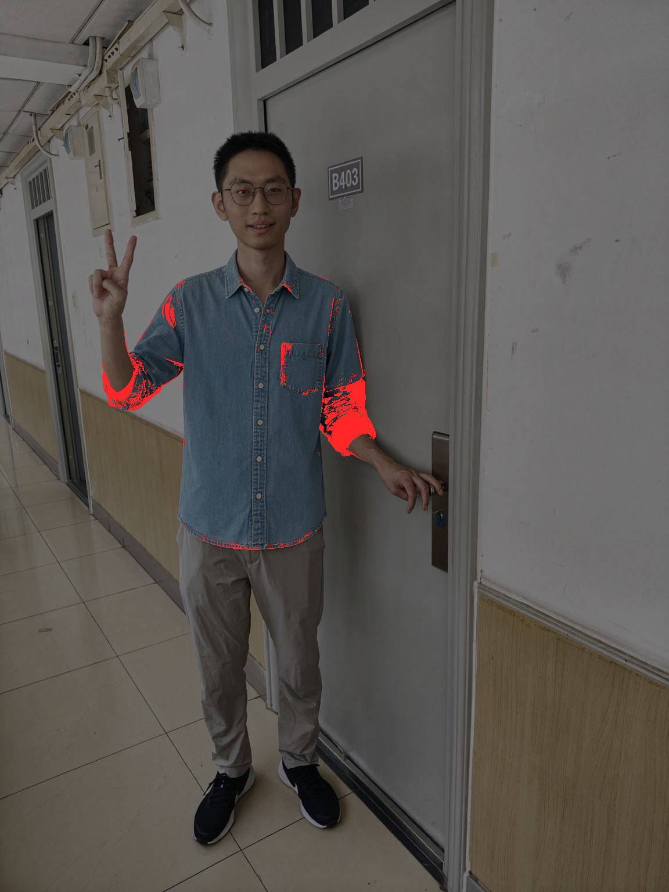
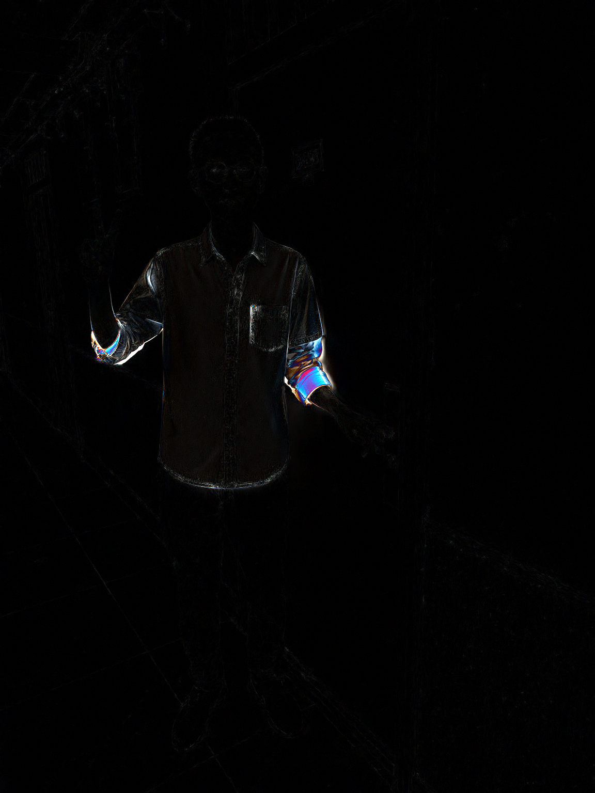

同一句指令、同一颗 seed：左边那张是默认（没开 FAST），右边那张开了 MIOPEN_FIND_MODE=FAST
54.1% 的像素不同，单通道最大差 185。根子在 VAE 选了另一套卷积内核，
于是 DiT 拿到的参考图 latent 就不同 —— 不是"糊了一点"，是另一张图。
默认（没开 FAST）
开了 FAST
只有大变化（通道差>16）标红，底图压暗

差异热力（|a−b| ×4，黑的地方完全没变）

default.png · 没开
fast.png · 开了
diff-heat.png · 差
where-big-changed.png · 通道差>16 标红